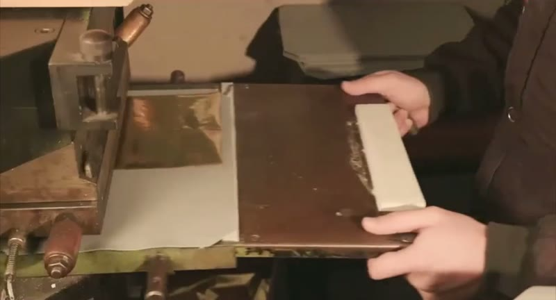
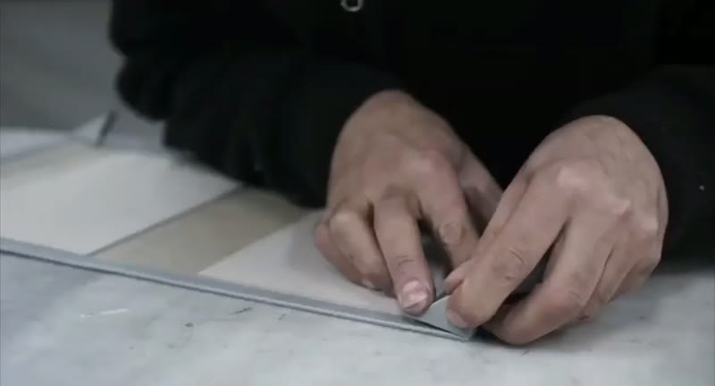
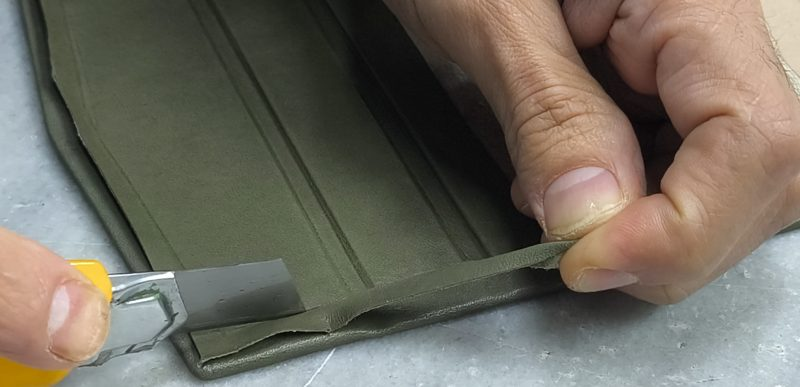
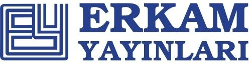
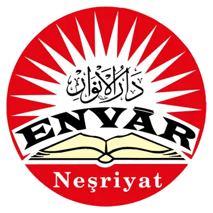
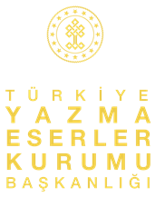

أربعة عقود على طاولة العمل
ورشة عائلية تصنع أغلفة المصاحف والطبعات الخاصة لكبرى دور النشر التركية منذ عام 1978.
غونالب (GÜNALP) دار تجليد جلدي من الجيل الثاني في إسطنبول. منذ عام 1978 نتخصص في أغلفة الجلد الطبيعي والجلد الحراري وربع الجلد، والنقش اليدوي العميق، والتذهيب الساخن، والحواف المذهّبة؛ ننتج المفردات الكلاسيكية لفن التجليد التركي بمعيار صناعي ثابت.
بدأنا بطاولة عمل واحدة؛ واليوم نصنع الأغلفة الجلدية للمصاحف والكتب الدينية والأعمال الكاملة والطبعات الخاصة، ونصمم بأنفسنا صناديق التقديم التي تحملها. أما تركيب الغلاف على جسد الكتاب المطبوع فيبقى لدى مطبعتكم أو مجلّدكم؛ نحن نصنع الأغلفة التي يركّبونها. ما زالت مكابسنا تعمل باليد وما زالت الزخارف تُضبط بالعين، أما المحاذاة واللون ومواعيد التسليم فنحكمها ضمن الحدود التي يتطلبها برنامج أي ناشر.
الأيدي وراء كل تجليد
لقطات من أرض الورشة في إسطنبول، كبس ونقش وصناعة أغلفة.



دور نشر ومؤسسات نعمل معها
أنتجنا لكبرى دور النشر الدينية والتراثية في تركيا على مدى أربعة عقود.
- سمرقند للنشر (Semerkand)
- خيرات للنشر (Hayrat)

أركام للنشر (Erkam)
أنوار للنشر (Envar، وقف الخدمة)- سرهند للنشر (Serhend)
- أوتوكن للنشر (Ötüken)

مؤسسة المخطوطات التركية (Yazma Eserler)
من العينة إلى الشحنة
- 01
طقم العينات
عينات جلد وغلاف منقوش وصندوق مصغّر، على مكتبك عبر DHL.
- 02
عرض السعر والتجهيز
عرض واضح حسب المقاس والكمية؛ ثم الكليشيهات ونموذج أولي لموافقتكم.
- 03
الإنتاج
كبس يدوي وصناعة أغلفة وصناديق، وفق معيار محاذاة واحد.
- 04
مراقبة الجودة
تُفحص كل نسخة بالعين قبل التغليف.
- 05
التصدير والشحن
تغليف بمواصفات التصدير؛ التسليم إلى بابكم أو مطبعتكم مباشرة.
لنتحدث عن طبعتك
يرد فريقنا خلال يوم عمل واحد.